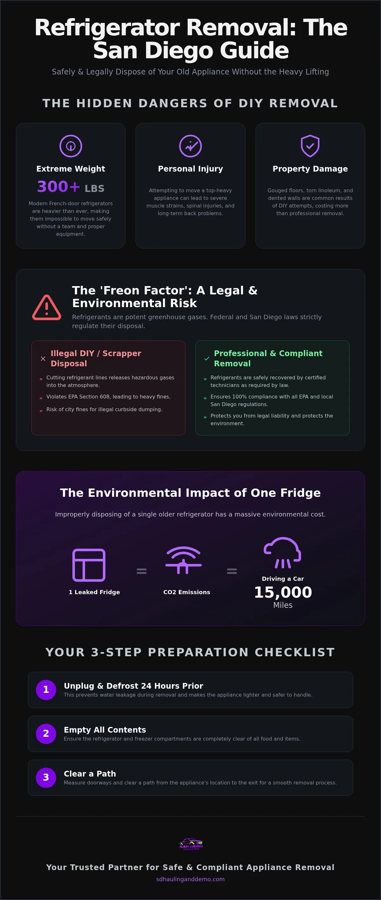

Key Takeaways
- Avoid personal injury and property damage by understanding why 300-pound modern units require specialized professional handling.
- Stay compliant with EPA mandates that require certified technicians to safely recover refrigerants before any disposal occurs.
- Streamline your refrigerator removal san diego by following a simple 24-hour defrosting and preparation checklist.
- Protect your home by choosing licensed and insured haulers over high-risk curbside services that won't enter your property.
- Save money with transparent, volume-based pricing that ensures you only pay for the space your appliance occupies.
Table of Contents
- The Challenges of Refrigerator Removal in San Diego
- What is the "Freon Factor" in Refrigerator Recycling?
- Professional Hauling vs. Free San Diego Pickup Services
- How to Prepare for Your Refrigerator Removal
- Why SD Hauling & Demo is San Diego's Top Choice

The Challenges of Refrigerator Removal in San Diego
Modern refrigerators are engineering marvels, but they're logistical nightmares when they stop working. If you're looking for refrigerator removal san diego, you'll quickly realize that a standard French-door model often exceeds 300 pounds. Most homeowners underestimate the sheer bulk until they try to tilt the unit onto a dolly. You aren't just moving weight; you're moving a top-heavy, awkward mass through narrow San Diego hallways that weren't designed for industrial-sized appliances. Many older homes in areas like North Park or Hillcrest have entryways that require removing the refrigerator doors just to clear the frame.
Physical Risks and Property Damage
Attempting a DIY move often leads to more than just a sore back. Without the right equipment, you risk permanent muscle strains or severe spinal injuries. Beyond the physical toll, your home takes a beating. We've seen countless DIY attempts end in gouged hardwood floors, torn linoleum, and dented drywall. In multi-story San Diego condos, the challenge doubles. Maneuvering a massive freezer down tight stairwells is a recipe for property damage that costs far more than a professional service. Professional crews use specialized straps and floor protection to ensure your home stays intact while the heavy lifting is handled safely.
Local San Diego Disposal Regulations
San Diego has strict rules about what hits the curb. The San Diego Environmental Services Department manages residential waste, but they won't take appliances left out without a scheduled appointment. Leaving a fridge on the street in neighborhoods like La Jolla or Chula Vista can result in hefty city fines for illegal dumping. These fines are designed to keep streets clear and prevent hazardous materials from leaking into the storm drains.
You also can't simply toss an old unit into a standard roll-off dumpster. Refrigerators contain complex components that require specialized electronic waste recycling procedures to prevent environmental contamination. Local landfills often charge surcharges for appliances containing refrigerants. They require proof that the unit has been properly drained by a certified technician. Managing these logistics yourself means renting a truck, finding a helper, and navigating the specific intake hours of local recycling centers — a multi-hour project that most people simply don't have time for. When searching for refrigerator removal san diego, homeowners often find that the DIY path is more expensive than hiring pros once you factor in truck rentals and potential repairs.
What is the "Freon Factor" in Refrigerator Recycling?
Freon is a specialized refrigerant gas used to keep your food cold, but it's also a potent greenhouse gas and a known ozone depleter. When a refrigerator reaches the end of its life, this gas doesn't just disappear. Federal law, specifically EPA Section 608, mandates that only certified technicians can recover these refrigerants. You can't simply cut the lines and let the gas escape — doing so is a direct violation of environmental regulations and carries heavy penalties. Many homeowners looking for refrigerator removal san diego don't realize that the "free" scrap collectors circling neighborhoods often ignore these laws. They typically cut the cooling lines to quickly harvest the copper and steel, venting the hazardous gas directly into the atmosphere.
We take a different approach at SD Hauling & Demo. Unlike some local recycling centers that refuse units containing Freon, we handle the entire compliance chain. We ensure every unit we haul is processed through legitimate channels where the gas is captured and recycled properly. This commitment to 100% compliant disposal protects you from the legal risks associated with improper waste management.
The Environmental Impact of Improper Disposal
The global warming potential of the refrigerant leaked from a single older refrigerator is equivalent to the CO2 emissions produced by driving a typical passenger vehicle for over 15,000 miles. The EPA enforces strict safe disposal requirements to prevent these gases from reaching the upper atmosphere. In a coastal city like San Diego, these regulations are even more vital. Proper disposal prevents hazardous chemical runoff from entering our local watersheds and harming the delicate Pacific ecosystem. When you choose a professional hauler, you're investing in the long-term health of our local beaches and communities.
The Journey of a Recycled Appliance
A responsible recycling process involves more than just dropping a unit at a scrap yard. It follows a methodical sequence to maximize material recovery:
- Step 1: Safe Extraction. Certified technicians use specialized vacuum equipment to extract all refrigerant gases and compressor oils without any atmospheric leakage.
- Step 2: Metal Sorting. The unit is dismantled to separate high-value metals like steel, copper, and aluminum, which are then sent to foundries for reuse in new products.
- Step 3: Responsible Management. The remaining components, including the insulation foam and plastics, are processed or disposed of according to California's strict hazardous waste guidelines to ensure nothing toxic leaches into the soil.
Professional Hauling vs. Free San Diego Pickup Services
Choosing between a professional service and a free collector might seem like a simple cost decision. It isn't. Most "free" appliance pickups in San Diego come with a significant catch: you have to get the refrigerator to the curb yourself. As we established earlier, moving a 300-pound unit through a narrow kitchen is the hardest part of the job. If you can't safely navigate your hallways or don't have a specialized dolly, a curbside-only service doesn't solve your problem — you're still stuck with the heavy lifting and the risk of injury.
Insurance is another major factor. Professional refrigerator removal san diego services are fully bonded and insured to protect your property. If an uninsured "free" collector trips on your stairs or drops the unit on your driveway, you could be liable for their medical costs or any damage to your home. We provide a scheduled, same-day appointment so you aren't left waiting for a truck that might never show up. Our volume-based pricing ensures you pay only for the space used, avoiding the hidden "heavy item" fees common with less transparent haulers.
The Hidden Risks of "Free" Collectors
Inviting unscreened workers into your private residence is a security risk you shouldn't take. Unlike professional teams, random collectors often lack background checks and proper training. They also rarely carry specialized equipment like appliance dollies, floor runners, or heavy-duty straps. This lack of preparation increases the chance of expensive damage to your floors and doorframes. There's also the legal risk of illegal dumping. If a collector strips the valuable metals and dumps the shell in a San Diego canyon, the unit can often be traced back to you through serial numbers — you'll be the one facing city fines, not the person who took it for "free."
Why Full-Service Hauling is a Better Value
Hiring a professional team saves you roughly 4 to 6 hours of your weekend. You don't have to research disposal sites, rent a truck, or bribe friends to help you lift heavy steel. You gain peace of mind knowing a local San Diego company with more than 25 years of experience is handling the logistics. It's also an opportunity for efficiency. Since we use volume-based pricing, you can often add other household junk, old furniture, or yard waste to the same trip for a lower total cost than separate hauls. It's about getting the job done right the first time without the stress of "what if" scenarios.
How to Prepare for Your Refrigerator Removal
Preparing for your refrigerator removal san diego doesn't have to be a chore. A little foresight ensures the crew can be in and out of your home in under ten minutes. Follow these four critical steps to streamline the process. First, empty all contents and remove glass shelving — loose glass can shatter when the unit is tilted onto a dolly, creating a safety hazard for everyone involved. Second, unplug the unit at least 24 hours before your appointment. Third, secure the doors with heavy-duty tape or rope; this prevents the doors from swinging open and hitting doorframes during transit. Finally, clear a direct path from your kitchen to the exit.
The 24-Hour Defrost Rule
Unplugging your unit a full day in advance is the most important step for protecting your home. Modern freezers often contain hidden ice blocks in the internal plumbing. If you wait until the morning of the appointment to unplug, that ice will melt while the unit is being carried through your house, leading to dirty water leaking onto your carpets or hardwood floors. Ensure the unit is completely dry before the crew arrives. For older units with significant frost buildup, place towels around the base to catch melt-water during the night. A dry unit is a safe unit.
Clearing the Path for the Crew
Efficiency depends on a clear exit route. Start by measuring your doorways to ensure the unit will fit through without extra disassembly. If the refrigerator is wider than the opening, you might need to remove the screen door or the refrigerator doors themselves. Move any light furniture, potted plants, or loose rugs that could become tripping hazards. It's also vital to secure your pets and keep children away from the high-traffic area. Our teams move quickly once they have the unit on a dolly, and a clear path ensures the job is finished without incident.
Why SD Hauling & Demo is San Diego's Top Choice
SD Hauling & Demo has served the local community since 2000. We specialize in making difficult tasks look easy. While many competitors require you to move heavy appliances to the curb yourself, our team handles everything from the kitchen to the truck. This full-service approach is why we remain the leaders in refrigerator removal san diego. We don't just haul junk; we provide a professional property management solution that respects your time and your home.
Our pricing model is built on transparency and fairness. We use volume-based pricing, which means you only pay for the space your items occupy in our truck. This is a significant advantage over companies that charge high flat fees for single appliances. Whether you're dealing with a broken freezer or a full-scale renovation, you get the same honest treatment. We also prioritize same-day service to accommodate urgent move-outs or unexpected appliance failures. Our commitment to responsible disposal through local recycling partnerships ensures that your old unit is processed according to the highest environmental standards.
Upfront Pricing with No Surprises
We believe in total transparency from the first point of contact. That's why we offer free on-site assessments to provide an exact quote before any work begins. You won't have to guess about the final cost or worry about hidden fees. Our quotes are comprehensive — they include all labor, transport, and recycling surcharges. You won't find "stair fees" or "heavy item" surcharges on your bill. We value your budget as much as your property.
Licensed, Bonded, and Insured Professionals
Your property is a major investment, and we protect it with a D-63 license and full insurance coverage. This isn't just paperwork; it's your guarantee that you're working with qualified experts in refrigerator removal san diego. Every crew member is covered by workers' compensation, which removes any liability from you as a homeowner or property manager. We treat your home like our own, using careful techniques and specialized equipment to prevent any damage to your floors or doorframes. We've seen every possible scenario and know exactly how to navigate the tightest spaces.
Schedule Your Free Refrigerator Removal Estimate
Let our seasoned, D-63 licensed professionals bring order to your kitchen. We provide a free on-site assessment, an exact volume-based quote, and same-day availability — with no stair fees or heavy-item surcharges hiding in the fine print.
Take Back Your Kitchen Space Today
Disposing of an old appliance shouldn't be a source of stress or physical risk. You now understand that professional refrigerator removal san diego is the only way to guarantee both legal compliance with EPA standards and the safety of your home's interior. By choosing a team that handles the heavy lifting, the Freon recovery, and the transport, you avoid the hidden pitfalls of DIY moves and unreliable curbside collectors.
SD Hauling & Demo is locally owned and has served the community since 2000. We're fully licensed, bonded, and insured to provide you with complete peace of mind. Whether you need more room in your garage or you're replacing a broken unit, we make the process simple and transparent. With same-day service available, you don't have to live with that old eyesore for another minute.
Frequently Asked Questions
How much does refrigerator removal cost in San Diego?
Pricing is determined by the total volume your items occupy in our truck rather than a single flat fee for the appliance itself. We provide free on-site assessments to give you an exact quote before any work begins. This ensures you only pay for the space you use. All transport and disposal fees are included in the upfront price we provide.
Do you remove refrigerators from upstairs apartments or basements?
Yes, we remove appliances from any area on your property, including multi-story apartments and basements. Our crews use specialized dollies and straps to safely navigate stairs without damaging your walls or floors. You don't need to move the unit to the curb — we handle the heavy lifting from exactly where the refrigerator sits.
Can you take a refrigerator that still has Freon in it?
We certainly take units that still contain refrigerant. Every refrigerator we haul is transported to a facility equipped to safely recover Freon according to EPA standards. This prevents hazardous gases from reaching the atmosphere. You can rest easy knowing your disposal is 100% legally compliant and environmentally responsible.
Is same-day refrigerator pickup available in North County?
Same-day service is available for residents in North County and the surrounding San Diego area. We understand that a broken fridge or a tight moving schedule requires a fast response. Contact us early in the day to secure a spot. Our team arrives on time and works quickly to clear your space.
What do I need to do to prepare my fridge for removal?
To prepare for your refrigerator removal san diego, start by removing all food and glass shelving. Unplug the unit at least 24 hours before we arrive to ensure the internal components are fully defrosted. This simple step prevents water from leaking onto your carpets during the move. Secure the power cord to the back of the unit with tape.
Do you recycle the refrigerators you pick up?
Recycling is a core part of our disposal process. We work with local partners to ensure that steel, copper, and aluminum components are salvaged for reuse. Any hazardous materials, such as oils and refrigerants, are managed at certified processing centers. This keeps heavy metals and chemicals out of our local landfills and protects the environment.
Can you remove commercial-sized walk-in freezers?
We handle large-scale commercial removals, including walk-in freezers and industrial refrigeration units. Our team is equipped for interior demolition tasks if the unit needs to be dismantled on-site. We work with business owners and property managers across San Diego to clear commercial spaces efficiently, including all the heavy hauling and debris management.
Are you licensed and insured for appliance removal in California?
We're fully licensed, bonded, and insured for your protection. Our crew carries workers' compensation, and we hold a D-63 license specifically for hauling and site cleanup. This ensures that you are never liable for accidents or property damage during the removal process. We maintain professional standards to provide a worry-free experience for every client.